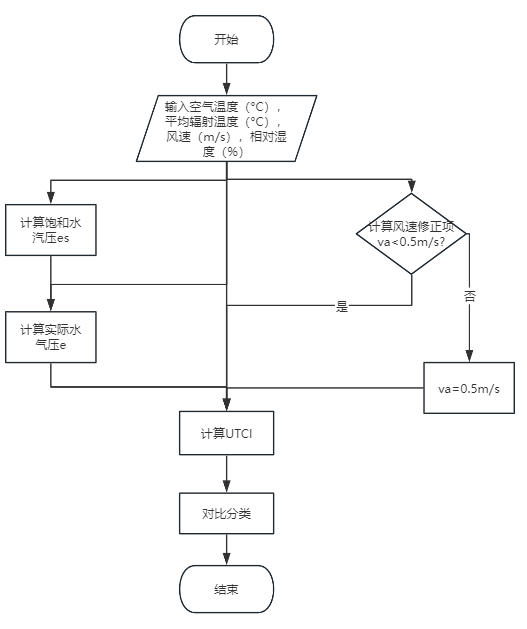
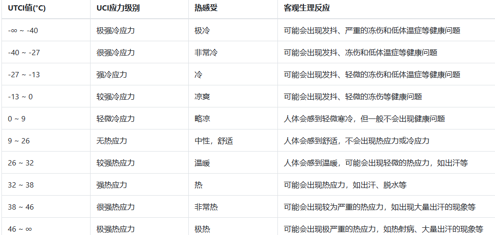

<div>
<div style="float: left;width:30%">

<small style="display:block; position:relative;margin-left: 35%;bottom:7px;">程序流程图</small>
</div>
<div style="float: left;width: 70%;">
<p style="width: 93%;margin-left: 0px;">
对比分类的评价依据:
UTCI的评价标准基于人体对不同热环境的反应，将UTCI值分类，以评估热舒适度或潜在的热应激。以下是一个常见的UTCI评价标准示例：
</p>

</div>
</div>